Как построить диаграмму типа спидометр в MS Excel?
Дмитрий Езепов
5-7 минут
Развитие инструментов анализа данных в сторону повышения наглядности - это определенно тренд. Правильно подобранное изображение может донести больше полезной информации, чем самая элегантная таблица. Очень эффектной является диаграмма типа спидометр, которая показывает текущее значение на некоторой ограниченной шкале. На этой диаграмме можно отображать, например, уровень KPI, выполнение плана продаж, уровень обслуживания клиентов и другие показатели с ограниченным диапазоном изменения. Циферблат спидометра делится на зоны, стрелка показывает текущее состояние дел. Снизу можно добавить точное значение измеряемого показателя.
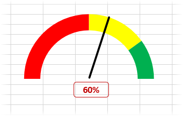
Такая диаграмма отлично встраивается в отчеты и дашборды, т.к. весьма информативна, не занимает много места и на вид красива. Однако этой диаграммы нет в стандартном наборе Excel (во всяком случае пока). Для ее построения, придется использовать доступные средства, скомбинировав кольцевую и круговую диаграммы, для шкалы и стрелки, соответственно.
Вначале об общем принципе. Шкала – это верхняя половина кольцевой диаграммы. Нижняя половина также есть, но она прозрачная. Стрелка – это контур видимого сектора круговой диаграммы. Там же есть еще два сектора, но они прозрачны. Местоположение стрелки определяет измеряемый показатель.
Теперь изучим, как сделать диаграмму-спидометр в Excel. Вначале подготовим данные для шкалы, для чего нужно задать 4 значения: величина нижней прозрачной части, красной, желтой и зеленой зоны (цвета и их количество, разумеется, можно выбирать самостоятельно). Т.к. прозрачная часть занимает половину диаграммы, то она должна быть равна сумме трех цветов. Для простоты пусть весь циферблат занимает 100 делений. Тогда красная зона (плохо) – 50, желтая (нормально) – 30 и зеленая (хорошо) – 20 (50+30+20=100). Чтобы получился полукруг, невидимая часть также должна быть равна 100.
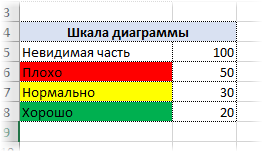
Выделяем весь диапазон и создаем кольцевую диаграмму.
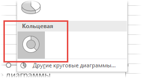
По умолчанию получится следующее.
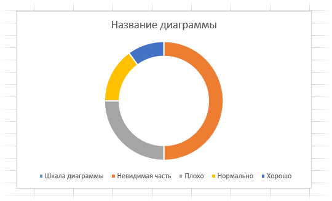
В параметрах ряда делаем поворот на 90⁰.
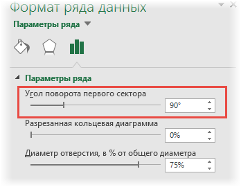
Удаляем название и легенду.
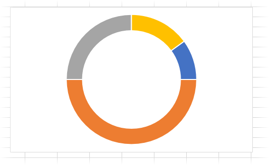
Почти готово. Двойным нажатием заходим в каждый сектор и меняем цвет: нижний – прозрачный, остальные – красный, желтый и зеленый. Контур также убираем.
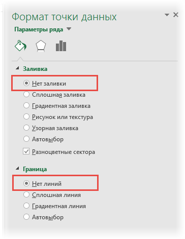
Получаем циферблат спидометра.
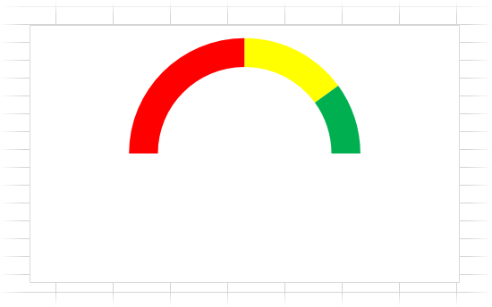
Теперь сделаем стрелку. Подготовим данные, по которым будут строится три сектора круговой диаграммы. Первый сектор – от нуля до стрелки (прозрачный), второй – стрелка, третий – оставшаяся часть круга (прозрачный).
На этот раз секторы должны быть подвижными и зависеть от измеряемого показателя. Результатом будет «отклонение стрелки» на соответствующую величину. Пусть показатель измеряется в процентах и его первоначальное значение равно 60%.
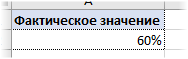
Как и с циферблатом, диапазон от 0 до 100% должен приходиться на верхний полукруг. Тогда весь круг – это 200%. Чтобы стрелка меняла свое положение, первый сектор (от которого строятся остальные) привяжем к значению измеряемого показателя. Стрелка имеет фиксированный размер, установим пока 2% (потом вообще уберем). Последний сектор – это разница между 200% и суммой первых двух секторов.
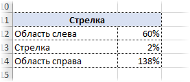
Теперь нужно добавить на имеющийся циферблат спидометра новый ряд данных, чтобы отобразить стрелку. Для этого нажимаем правой кнопкой мыши по диаграмме и в контекстном меню «Выбрать данные…».
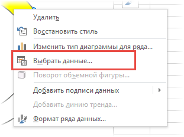
Указываем источник данных (диапазон из трех значений) и ОК. Должно получиться примерно следующее.
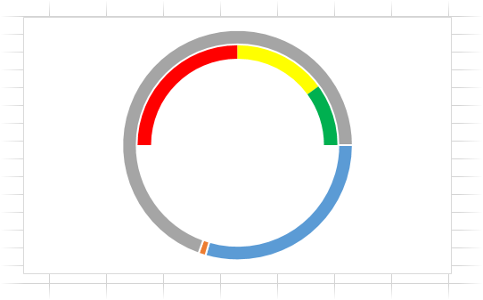
Не нужно пугаться, вон тот оранжевый зародыш внизу – это будущая стрелка. Дело в том, что вместо нужной круговой диаграммы пока получилось второе кольцо. Поэтому в контекстном меню (через правую кнопку мыши) выбираем новый тип для этого ряда.
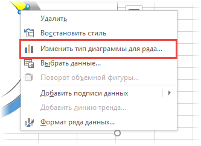
Меняем диаграмму на круговую.
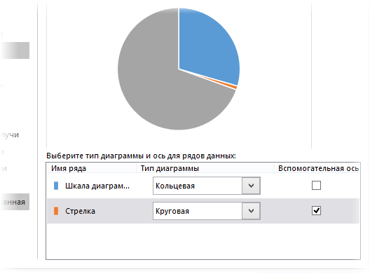
Обязательно нужно выбрать вспомогательную ось, как на рисунке, иначе стрелка окажется под циферблатом. Осталось повернуть диаграмму на 270⁰ и сделать прозрачными ненужные секторы.
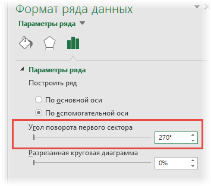
Не забываем убрать контуры секторов.
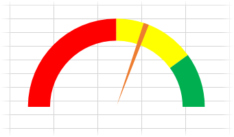
Чтобы стрелка была больше похожа на стрелку, а не на узкий кусочек пирога, зададим для нее вначале черный (или другой) контур, а затем ширину сектора вместо 2% сделаем 0%.
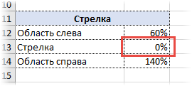
Сектор исчезнет, а контур превратится в черную линию.
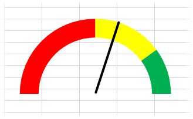
Для более точного и отображения снизу можно добавить цифровое значение показателя. Это сделать очень просто. Вставим прямоугольник с закругленными углами.
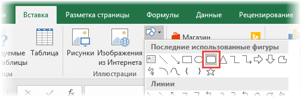
Сделаем прозрачный фон, красный контур. Затем выделим полученную фигуру, поставим курсор в строку формул и сделаем ссылку на отображаемое значение.
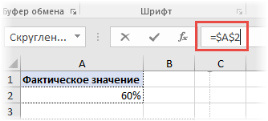
Отформатируем, как нужно и получим окончательный вид спидометра.
Остался один нюанс. Дело в том, что, если значение выйдет за пределы от 0 до 100%, то стрелка окажется не известно где.
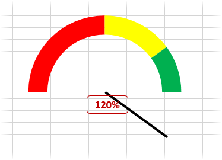
Чтобы исправить возможную ошибку, с помощью функции ЕСЛИ в формуле, определяющей отклонение стрелки, зададим минимальное значение 0 и максимальное 100%.
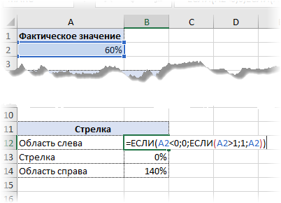
Примерно так рисуется "классический" спидометр.
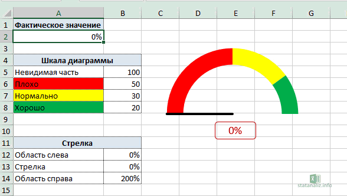
Иногда диапазон возможных значений нельзя разделить четкими границам типа "плохо", "нормально", "хорошо". Четких границ может не быть, тогда потребуется плавный переход от одного цвета к другому. Например, когда в качестве результата получается некоторая вероятность (p-level, мощность критерия) или измеряется уровень дефицита запасов, где также нет четких границ и хотелось бы подчеркнуть их размытость. В этом случае для шкалы спидометра следует использовать градиентную заливку. В целом диаграмма строится также, но ее циферблат состоит из одного цвета, плавно переходящего в другой.
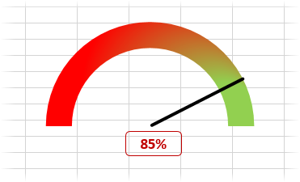
Сделать такую диаграмму также несложно. Отличие только в циферблате. В ролике ниже показана пошаговая инструкция, как в Excel сделать оба варианта спидометров.
Используйте диаграмму спидометр в Excel, чтобы удивить своих коллег, а также руководство. По кнопке ниже можно скачать файл с примерами.
На этом пока все, до новых встреч.